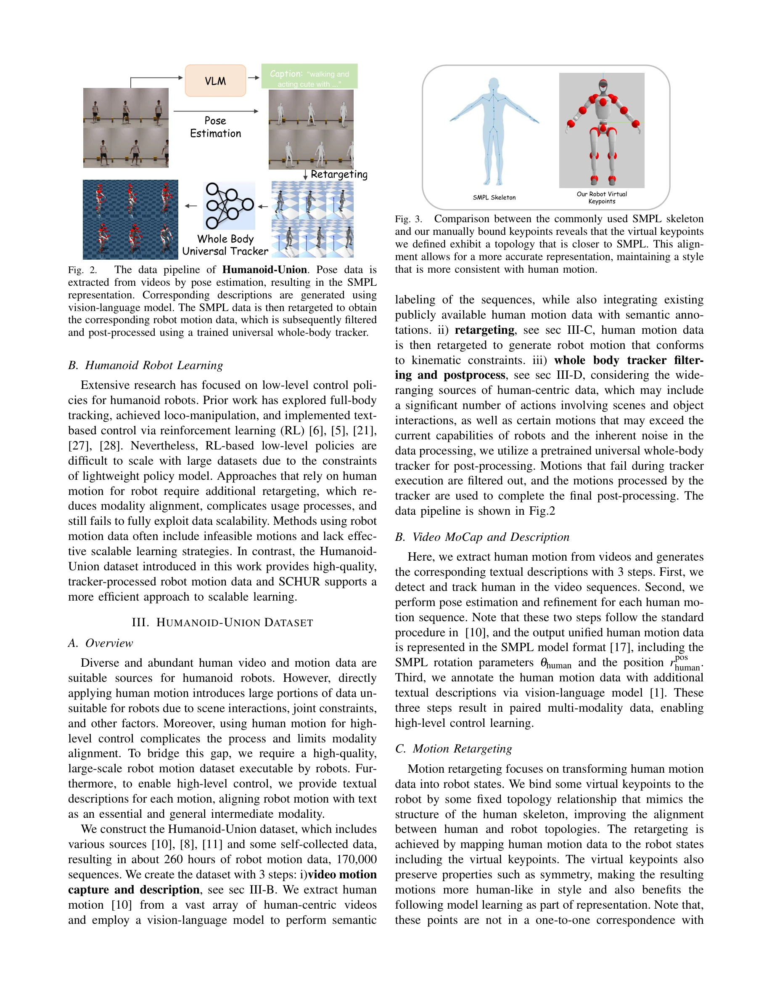

Essence

Fig. 1. We present the large-scale, high-quality robot motion dataset
대규모 인간 모션 데이터를 활용하여 자동 파이프라인으로 생성한 Humanoid-Union 데이터셋(260시간)과 이를 기반으로 하는 SCHUR 프레임워크를 제안하여 텍스트 기반 휴머노이드 로봇 모션 생성의 확장성을 달성했다.
저자: Yuxi Wei, Zirui Wang, Kangning Yin, Yue Hu, Jingbo Wang, Siheng Chen | 날짜: 2025-12-07 | DOI: 10.48550/arXiv.2511.09241
Fig. 1. We present the large-scale, high-quality robot motion dataset
대규모 인간 모션 데이터를 활용하여 자동 파이프라인으로 생성한 Humanoid-Union 데이터셋(260시간)과 이를 기반으로 하는 SCHUR 프레임워크를 제안하여 텍스트 기반 휴머노이드 로봇 모션 생성의 확장성을 달성했다.
Fig. 1. We present the large-scale, high-quality robot motion dataset

Fig. 2.
총평: 본 논문은 대규모 자동화 파이프라인으로 고품질 로봇 모션 데이터셋을 구축하고, FSQ VAE 및 LLaMA 기반 SCHUR 프레임워크로 효과적인 data/model scaling을 달성하여 휴머노이드 로봇의 텍스트 기반 고수준 제어의 실질적 발전을 보여준다.